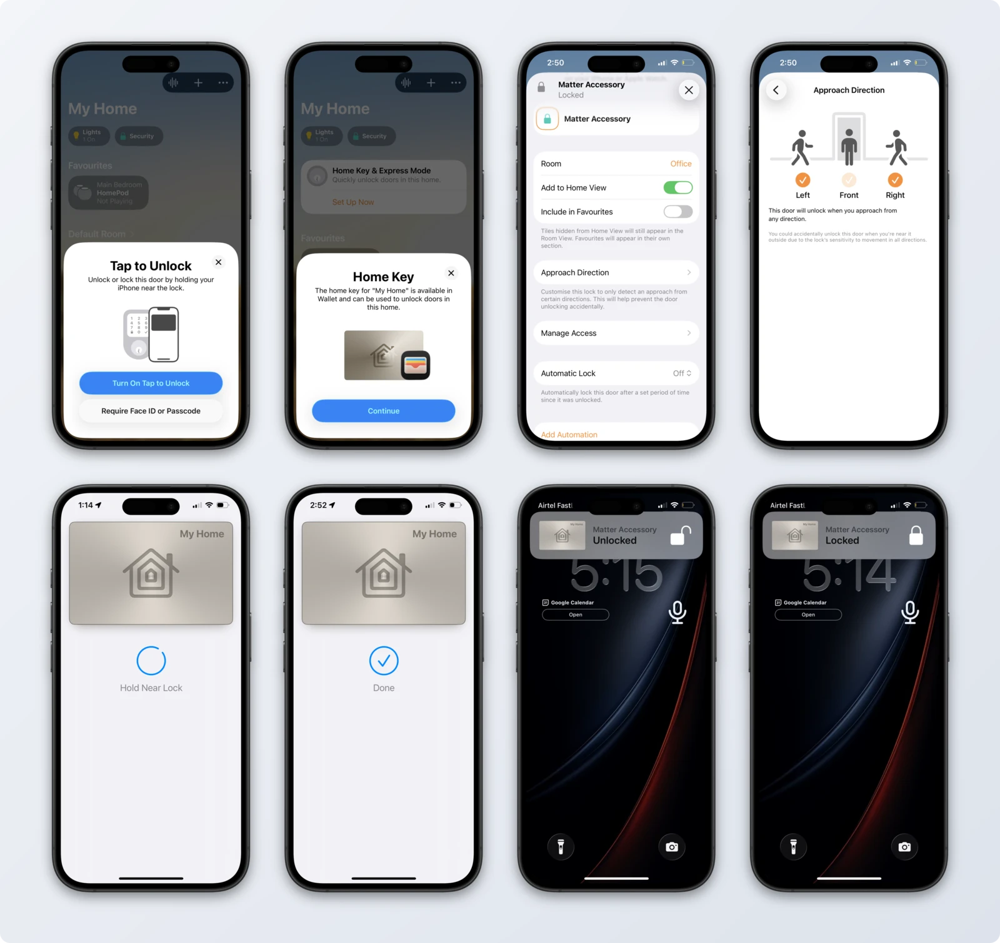
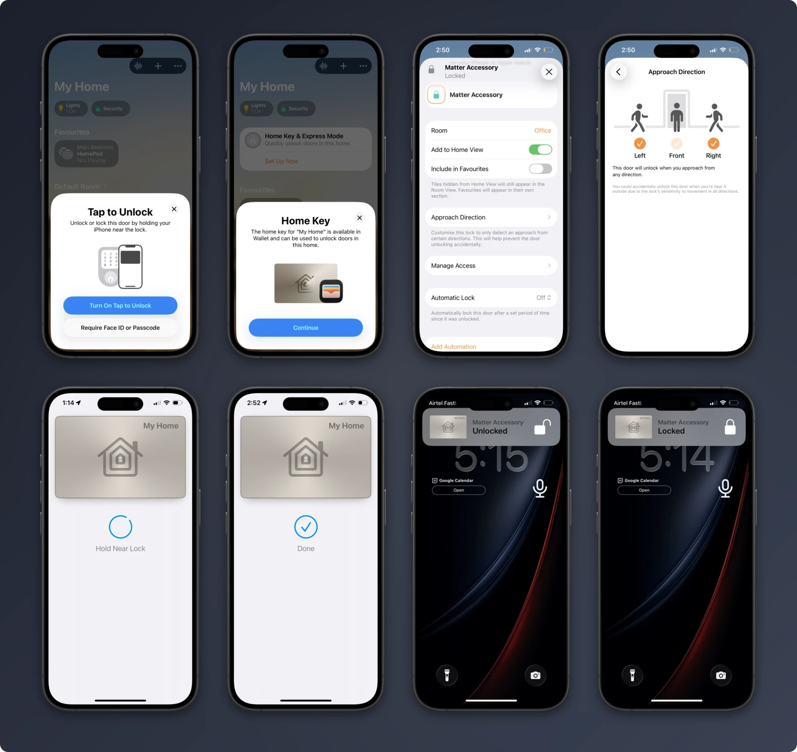

Overview
asxeem/openaliro
Developer documentation
openaliro
openaliro implements the lock side of an Aliro digital key. The phone authenticates over Bluetooth LE and measures its distance over ultra-wideband: the door unlocks as the phone approaches and relocks as it leaves.
$nrfutil sdk-manager toolchain install --ncs-version v3.3.0
114subsystems
91%documented
633symbols
openaliro · zsh
$nrfutil sdk-manager toolchain install --ncs-version v3.3.0 # once per machine
$make bootstrap # fetch NCS v3.3.0 + the Nordic add-on (~6.5 GB) into ./workspace
$make build # → ./build/merged.hex
$make flash-erase # first flash of a net-core image
$make flash # every flash after that
$


Get running
- 1Clone the repository$git clone https://github.com/asxeem/openaliro.git
- 2Install the toolchain once per machine$nrfutil sdk-manager toolchain install --ncs-version v3.3.0
- 3Fetch the SDK workspace NCS v3.3.0 + the Nordic add-on (~6.5 GB) into ./workspace$make bootstrap
- 4Build the firmware the merged image lands in ./build/merged.hex$make build
- 5Flash the board the first flash of a net-core image needs the erase; plain make flash after that$make flash-erase
No toolchain? make test runs as-is. On ESP32-S3,
start at the bring-up checklist.
- ArchitectureEvery subsystem on one page, in reading order.
- HardwareESP32-S3 gotchas
- TroubleshootingTroubleshooting
- ReferenceAll 114 modules, grouped by directory.
Guides
Set up
- InstallingThe nRF5340 DK is the primary target; the ESP32-S3 apps port the same engine. No hardware needed until you flash.
- ConfiguringThree layers: build options on the make command line, the Kconfig overlays behind them, and runtime consoles on the running reader.
- TroubleshootingCommon issues, grouped by where they show up. Deeper protocol background is in
protocol-research.md(on-air behavior) andprotocol-notes.md(firmware time and…
Hardware
- nRF5340 bring-upParts on the bench to a healthy first boot; toolchain install is in set-up.md.
- ESP32-S3 bring-upOne page, match-the-table. The pin map's source of truth is
ports/esp32/components/woz_uwb/port/board_pins.h; if you change it there, change it here. - Hardware validationAutomated CI gates the host-side logic (KAT suite, coverage floor, sanitizers, fuzz, CBMC, the ESP32 port suite) and compile-gates both targets' firmware. What it…
Deep dives
- Protocol researchThis report documents the on-air behavior of a phone-driven ultra-wideband (UWB) proximity unlock: how a phone opens a fixed reader on approach. The phone conducts…
- Time synchronizationFirmware-level notes on one subsystem: how the reader obtains wall-clock time, how that interacts with Aliro's time-based credential checks, and the fixes this repo…
- Approach DirectionHow the Apple Home app's "Approach Direction" control is exposed by an Aliro lock, and every trap hit making it appear on the ESP32-S3 port. Validated on silicon…
- Deriving the ranging keyPrerequisite reading:
porting-esp32.md(roadmap and retrospective) andprotocol-research.md(the reverse-engineered protocol notes; this doc stays at that same… - Memory usageScope: the primary nRF5340 DK image only. The ESP32-S3 apps have their own budgets and partition layout (
ports/esp32/apps/*/partitions.csv) and are not measured here.
Porting
- Porting to a new chipsetHow the UWB engine moves to a new chipset, what it costs, and how to prove a port did not change the code the validated target runs.
- Porting to ESP32-S3This document keeps the original plan, written before any ESP32 code existed, and marks what the plan got right and wrong. The plan's own estimates are left unedited…
- ESP32-S3 gotchasHard-won, non-obvious findings from porting the Aliro UWB door-lock reader to ESP32-S3 (ESP-IDF + esp-matter + NimBLE + DWM3000EVB). Each entry is a trap actually hit…
Project
- ReferenceThe API reference at
site/api/index.htmlis a separate tree, generated by Doxygen from the declarations themselves. It is built rather than committed, so there is… - ReleasingHow to cut a release. Versions follow SemVer (
vMAJOR.MINOR.PATCH); pre-1.0, a minor bump means new capability and a patch bump means fixes only.
Reference
integration/homeassistantmodules/woz_aliro/include- aliro_ble.hAliro BLE-UWB reader transport: GATT service definition, advertised feature flags, and transport
- aliro_crypto.hAliro crypto public API: key derivation, AES-GCM secure channels, and wire message
- aliro_lat.h
- aliro_prim.h
- aliro_prov.hPersistent reader provisioning storage: identity and credential trust anchors saved to and
- aliro_reader.h
modules/woz_aliro/src- aliro_apdu.cAliro APDU TLV codec: builds command payloads (AUTH0, AUTH1, AuthData, EXCHANGE) and parses
- aliro_apdu.hAPDU framing and parsing for the Aliro Access Protocol: builds outbound command APDUs via a
- aliro_crypto.cAliro cryptographic primitives: key derivation (KDF/HKDF), key-block splitting, AES-GCM secure
- aliro_hash.cSelf-contained SHA-256, HMAC-SHA256, HKDF, and ANSI-X9.63 KDF implementation for the ESP32-IDF
- aliro_hash.hStreaming SHA-256 (FIPS 180-4) implementation used by the Aliro crypto layer.
- aliro_lat.cWalk-up latency trace: first-hit phase timestamps + the consolidated budget line.
- aliro_prim_psa.cAliro crypto primitive backend implemented on Arm PSA Crypto: random generation, AES-256-GCM
- aliro_prov.cAliro reader provisioning state: default dev identity, and serialization/deserialization of the
- aliro_ranging.cUWB ranging bring-up and lifecycle for the Aliro reader: initializes the reader's UWB
- aliro_ranging.hAliro M1-M4 ranging-setup interface: negotiates UWB ranging parameters with the device and
- aliro_reader.cAliro reader engine: drives the Access Protocol (AUTH0/AUTH1/EXCHANGE) handshake over BLE,
modules/woz_aliro_ecp/srcmodules/woz_port/includemodules/woz_uwb/src/aliro- aliro_uwb_adapter.c@file aliro_uwb_adapter.c — reader-context lifecycle.
- aliro_uwb_internal.h@file aliro_uwb_internal.h — private context types and shared helpers.
- aliro_uwb_msg.c@file aliro_uwb_msg.c — setup/notification message codec.
- aliro_uwb_msg.h@file aliro_uwb_msg.h — message framing accessors, dispatch and builders.
- aliro_uwb_msg_builder.c@file aliro_uwb_msg_builder.c — big-endian TLV message builder.
- aliro_uwb_msg_builder.h@file aliro_uwb_msg_builder.h — big-endian TLV message builder.
- aliro_uwb_msg_parser.c@file aliro_uwb_msg_parser.c — TLV attribute parser and big-endian reads.
- aliro_uwb_msg_parser.h@file aliro_uwb_msg_parser.h — TLV attribute iteration and big-endian reads.
- aliro_uwb_msg_spec.h@file aliro_uwb_msg_spec.h — UWB ranging-service framing constants.
- aliro_uwb_session.c@file aliro_uwb_session.c — per-session lifecycle and state machine.
modules/woz_uwb/src/aliro/include/aliro_uwb_adapter- aliro_uwb_adapter.h@file aliro_uwb_adapter.h — reader-device public interface.
- aliro_uwb_session.h@file aliro_uwb_session.h — per-session public interface.
modules/woz_uwb/src/aliro/include/cherry- cherry.h@file cherry.h — Cherry core (context + device-capabilities) interface.
- cherry_ccc.h@file cherry_ccc.h — CCC/Aliro-session interface (seam the adapter drives).
- cherry_common.h@file cherry_common.h — diagnostics config struct and report forward decl.
- cherry_session.h@file cherry_session.h — generic base-session interface.
modules/woz_uwb/src/ccc- aliro_kdf.h@file aliro_kdf.h — UWB Ranging Secret Key (URSK) length.
- aliro_round_config.h@file aliro_round_config.h — one knob for the CCC ranging round's responder count.
- ccc_crypto_mbedtls.c@file ccc_crypto_mbedtls.c — AES-ECB block via mbedTLS, backing the CCC key schedule on SoCs
- ccc_crypto_psa.c@file ccc_crypto_psa.c — On-target AES-ECB block (PSA/CC312) backing the CCC key schedule.
- ccc_kdf.c@file ccc_kdf.c — UWB key schedule + SP0 Pre-POLL frame codec.
- ccc_kdf.h@file ccc_kdf.h
- ccc_mac.c@file ccc_mac.c — UWB MAC: hopping sequence, SP0 frame codec, ranging schedule.
- ccc_mac.h@file ccc_mac.h — CCC UWB MAC layer: ranging-round scheduling, SP0 frame codec, DS-TWR.
- ccc_session.c@file ccc_session.c — Aliro/CCC ranging seam implementation. See ccc_session.h.
- ccc_session.h@file ccc_session.h — Aliro/CCC ranging seam: map an Aliro session's URSK + M1-M4 setup to
- ccc_shim.c@file ccc_shim.c — CCC STS substitution core (implementation).
- ccc_shim.h@file ccc_shim.h — map a per-frame STS index to the (dURSK, STS-V) pair the DW3000 STS engine
- ccc_shim_rx.c@file ccc_shim_rx.c — responder-RX CCC STS substitution (ld --wrap=dwt_rxenable) programming the
- ccc_shim_wrap.c@file ccc_shim_wrap.c — per-frame STS interception (ld --wrap=dwt_configurestsiv) substituting
- ccc_sts.c@file ccc_sts.c — DW3000 STS register load for the CCC ranging path.
- ccc_sts.h@file ccc_sts.h — load a CCC ranging PPDU's STS key + IV into the DW3000 STS engine.
- cherry_ccc_shim.c@file cherry_ccc_shim.c — cherry_ccc_* seam (Aliro responder) implemented over the lock-native
modules/woz_uwb/src/driver- uwb_isr.c@file uwb_isr.c — DW3000 interrupt-callback registration (implementation).
- uwb_isr.h@file uwb_isr.h — DW3000 interrupt-callback registration (public surface).
- uwb_min.c@file uwb_min.c — DW3110 bring-up driver (implementation).
- uwb_min.h@file uwb_min.h — Minimal DW3110 (DWM3000EVB) hardware bring-up driver.
- uwb_rxdiag.c@file uwb_rxdiag.c — Diagnostic RX/TX event tallies + ranging heartbeat.
- uwb_rxdiag.h@file uwb_rxdiag.h — Read-side accessors for the RX event tallies + log stream.
- uwb_selftest.c@file uwb_selftest.c — Kconfig-gated one-shot UWB init self-test (no iPhone).
modules/woz_uwb/src/facade- trace.h@file trace.h — Structured [WOZ_TRACE] emit helpers, gated on CONFIG_WOZ_E2E_TRACE.
- woz_alloc.hMemory allocation and timing facade: qmalloc, qcalloc, qfree wrap the platform heap;
- woz_bytes.h
- woz_diag.h@file woz_diag.h — DIAGK(): gate for verbose UWB bring-up diagnostics.
- woz_logfmt.c@file woz_logfmt.c — PRETTY-gated high-res timestamp + compact colored log line.
- woz_logquiet.c@file woz_logquiet.c — PRETTY-gated runtime muting of benign upstream error spam.
- woz_util.h
- woz_uwb_facade.cUWB facade: binds the CCC credential-based STS engine to the DW3000 radio, exposes Aliro DS-TWR
- woz_uwb_facade.hPublic header for UWB facade: exposes Aliro DS-TWR responder lifecycle and range query; the CCC
modules/woz_uwb/src/fira- fira_device_config.h@file fira_device_config.h — FiRa DS-TWR device/session parameter bag consumed by
- fira_session.c@file fira_session.c — Range + URSK store for the CCC Pre-POLL responder.
- fira_session.h@file fira_session.h — Range + URSK store for the CCC Pre-POLL responder.
modules/woz_uwb/src/shellports/esp32/apps/matter-lock/main- app_driver.cppBoard driver glue for the ESP32 Matter port: button input, WS2812 lock-status LED, and the
- app_main.cppMatter application main: door lock endpoint setup, Matter lifecycle event handling, and (when
- app_priv.h
- app_shell.cppESP32-IDF console shell for the Aliro Matter door lock app: registers status, range, aliro, lock/unlock, codes, factoryr
- app_shell.h
- lock_led.cLock-state indicator LED: maps lock state (and Aliro activity) to an RGB colour for the single
- lock_led.hLock status LED color mapping: derives the RGB color for the lock indicator from the
ports/esp32/apps/matter-lock/main/lock- aliro_reader_delegate.cppAliroReaderDelegate: implements the Aliro reader-provisioning and BLE-UWB portions of the Matter
- aliro_reader_delegate.hDeclares AliroReaderDelegate, the Aliro (Apple Home Key) reader-provisioning and BLE-UWB half of
- door_lock_callbacks.cppMatter DoorLock cluster plugin callbacks: wires the ESP32 port's BoltLockManager into the
- door_lock_manager.cppBoltLockManager: Matter door lock cluster backing store for the ESP32 port. Implements the DoorLock cluster's user, cred
- door_lock_manager.hDoor lock manager for the Matter DoorLock cluster: owns bolt lock state plus the users,
ports/esp32/apps/reader/main- app_shell.cESP32-IDF console shell for the standalone Aliro UWB responder bench app: registers status, range, aliro-start/stop, pro
- app_shell.h
- main.cWoz UWB ranging engine on ESP32-S3 (ESP-IDF) — minimal bring-up app.
ports/esp32/components/aliro_bleports/esp32/components/aliro_readerports/esp32/components/woz_uwb/port- board_pins.hDW3000 (DWM3000EVB) wiring on ESP32-S3, SPI2/FSPI. Source of truth for the
- dw3000_hw.cESP-IDF GPIO/IRQ backend for the DW3000 decadriver — implements dw3000_hw.h.
- dw3000_spi.cESP-IDF SPI backend for the DW3000 decadriver — implements dw3000_spi.h.
- woz_wrap_stubs.cMinimal ESP-IDF port of the essential RX-callback shim.
release/esp32-matter-lockrelease/nrf5340dkscripts- bootstrap.shbootstrap.sh — build a self-contained west workspace, PRISTINE from upstream.
- build.shbuild.sh {build|rebuild|flash|flash-erase|build-flash} — build the Aliro
- docs-publish.shdocs-publish.sh — snapshot the rendered site/ onto the local gh-pages branch.
- docs.shdocs.sh — build the documentation site into site/.
- flash_html.pyRender a release FLASH.md into a self-contained FLASH.html.
- ws-seed.shws-seed.sh — give this git worktree its own NCS workspace, cheaply.
tools- docs_3d.pyRender the whole code surface as a flyable 3D graph: site/graph3d.html.
- docs_api.pyFill the reference pages the page generator leaves bare.
- docs_cmds.pyRender runnable command blocks as one copy chip per command.
- docs_github.pyPoint the rendered site back at its GitHub repository.
- docs_graph.pyMake the architecture page's dependency graph legible.
- docs_links.pyRepair cross-document links in the rendered site, then assert none are left broken.
- docs_media.pyAdd the repo's imagery to the rendered site: demo screenshots and a share card.
- docs_nav.pyGive the rendered site one curated reading order.
- docs_start.pyGive the rendered site a real "Get started" landing.
- docs_theme.pyRetheme the rendered site: warm paper surfaces, serif display headings.
- docs_title.pyTitle the generated pages after the repository, not after the checkout directory.